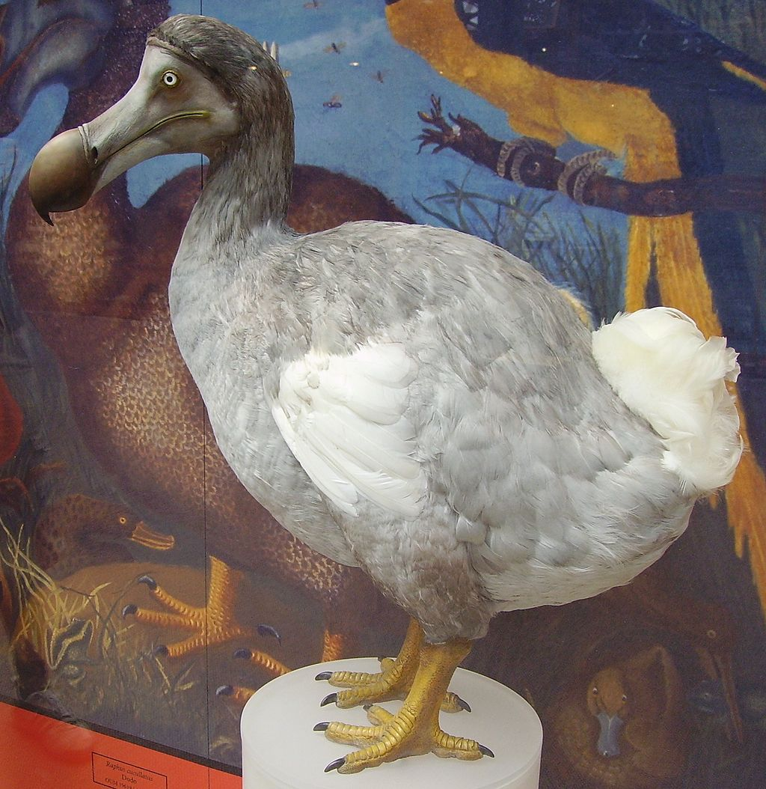
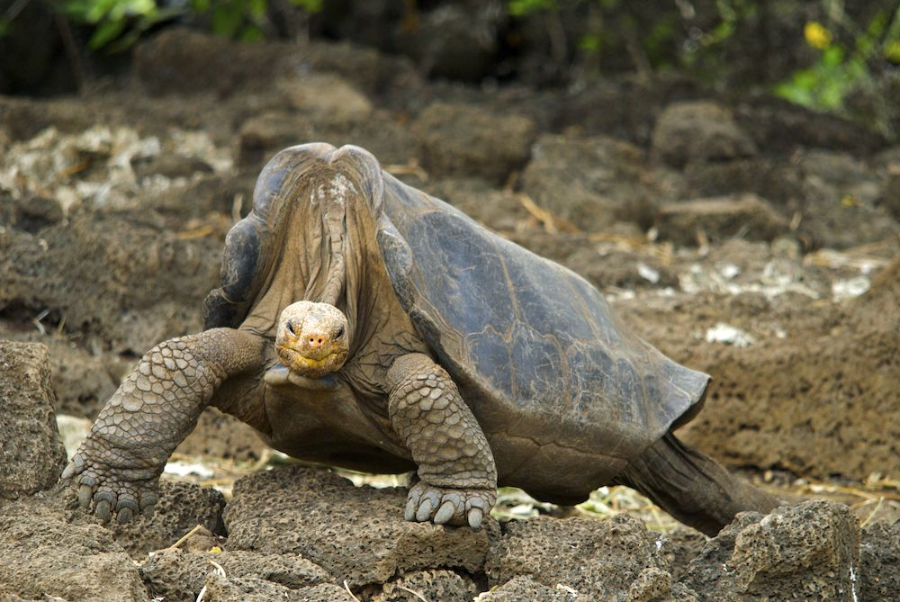
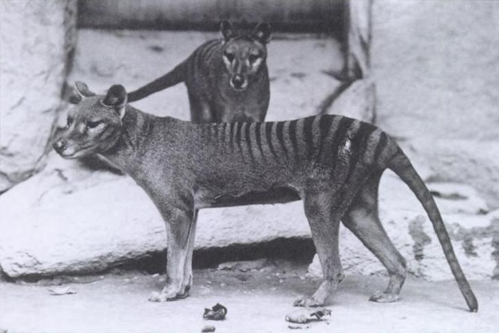

Dodo
Nombre científico Raphus cucullatus, habitaba en los bosques de la isla Mauricio en África, era un ave no voladora que medía 1 metro y pesaba entre 9 a 17kg aproximadamente, su pico media 23 cm con punta en forma de garfio que utilizaba para romper cocos y alimentarse se descubrió en 1574 por unos colonizadores portugueses y le llamaron Dodo que quiere decir estúpido pues era un ave torpe y muy fácil de cazar. Fue por la llega del ser humano que se introdujeron nuevas especies que no eran parte de su ecosistema, por lo que a causa de la caza, pero sobre todo del ataque de estas especies tales como cerdos, cangrejos, perros, gatos y ratas esta ave se extinguió alrededor de 1690. Causa extinción: Intervención humana.
Tortuga pinta
Nombre científico Chelonoidis abingdonii, habitó la isla Pinta parte de islas Galápagos, Ecuador, descrita por primera vez en 1877, a causa de que se ingresaron cabras a su hábitat natural, disminuyó su fuente de alimento y para mediados del siglo XIX al representar una buena fuente de alimentos fue consumida en exceso lo que provocó una fuerte disminución en su población, estos dos factores provocaron su extinción en el año 2012 donde luego de muchos esfuerzos por tratar de repoblar esta especie de tortuga muerte “El solitario Jorge” quien vivió aproximadamente 120 años y fue el último macho conocido de su especie.
Tigre de Tasmania
Nombre científico Thylacinus cynocephalus, conocido como lobo de Tasmania, habitó en Australia, Tasmania y Nueva Guinea, mencionado por primera vez en arte rupestre unos 1000 años a. C., podía medir entre 100 y 180 cm de longitud , incluyendo la cola y pesaban entre 20 y 30 Kg. Se extinguió en Australia debido a los Dingos los cuales eran cazadores diurnos unos mil años antes de que Australia fuera habitada y en Tasmania desaparecieron por culpa de la caza indiscriminada siendo acusados por los colonos europeos de muertes de ganado, por lo que se autorizó su caza a cambio de recompensas, además ingresaron perros a su ecosistema por lo que desaparecieron para 1930, su último espécimen llamado “Benjamín” murió en un zoológico en 1936 cerrando su ciclo de existencia.